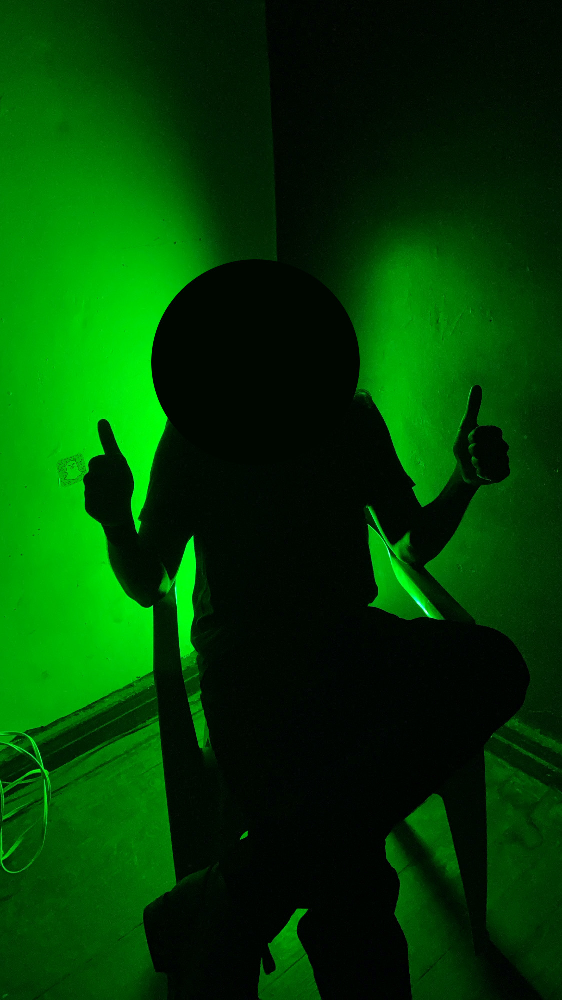

<section class="section section-lg pt-0 @@classes">
    <div class="container">
        <div class="row align-items-center justify-content-around">
            
            <div class="col-md-6 col-xl-6 text-center text-md-left">
                <h2 class="h1 mb-4">About</h2>
                <p class="lead">S List began as a finsta for following the underground music scene in CDMX. When I realized some of my friends could 
                    use some help with their nightlife, I spread the word. I remained anonymous as a personal challenge, for a long-term gag,
                    and due to practical reasons.
                </p>
                <p class="lead">I enjoy the anonymity. It lets me be more expressive.
                </p>
                <a href="https://open.spotify.com/user/z09n91efexts02mucc1kils6z?si=a6Jox2yYTsOzO6nacl-leA&dl_branch=1&nd=1" target="_blank"
                        class="btn btn-spotify mb-3 mt-lg-1 mb-lg-3 mr-3"><i class="fab fa-spotify mr-2"></i>
                        SlayList™</a>

                <p class="lead">There's two S Lists. The one described above, and another list for the events I'm personally looking forward to (pulic). 
                    I currently enjoy raunchy provacative dark techno, some "experimental", and "unique" events.</p>
                
            </div>
            <div class="col-md-6 col-xl-4 mb-5">
                <div class="card bg-primary shadow-soft shadow-inset border-light organic-radius p-3">
                    
                </div>
            </div>
        </div>
    </div>
</section>